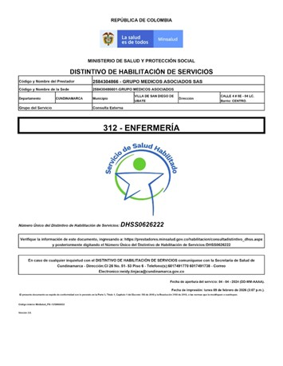
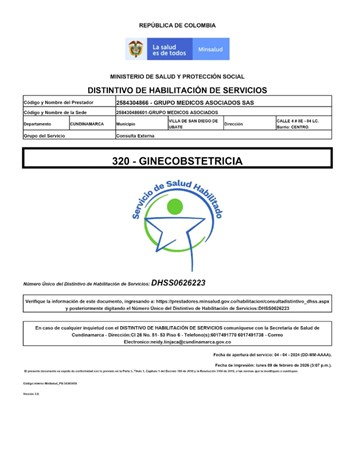
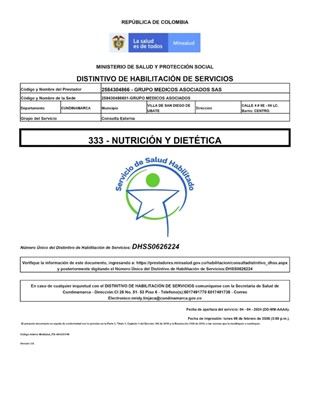
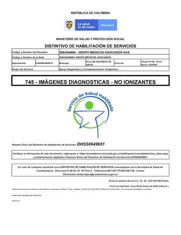
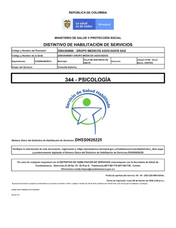
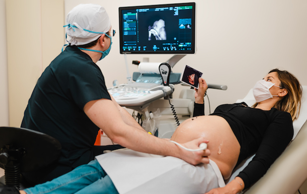
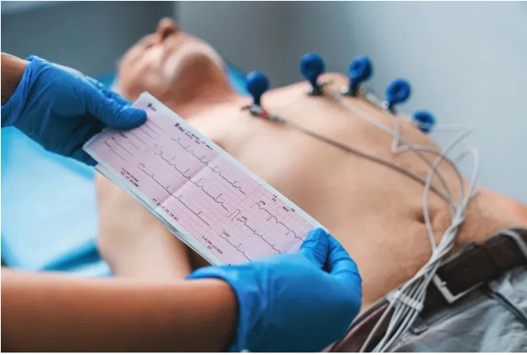
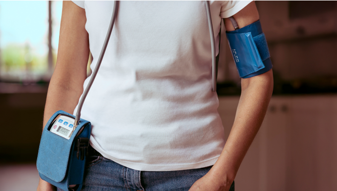
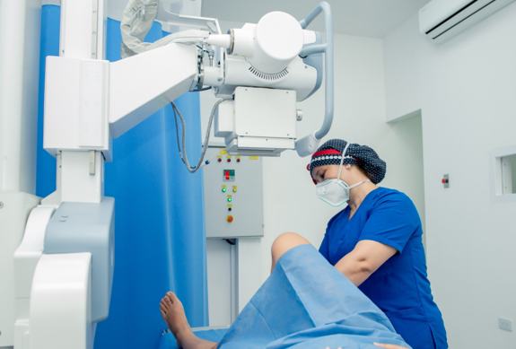

Seccion de Servicios Medicos
Atención integral para tu bienestar
En nuestra institución ofrecemos servicios médicos integrales con profesionales altamente calificados y tecnología diagnóstica moderna. Nuestro compromiso es brindarte una atención segura, humana y centrada en el cuidado de tu salud y la de tu familia.





Medicina General
Atención médica integral para todas las edades.
La Medicina General es el primer paso para el cuidado de tu salud. Nuestro equipo médico brinda atención integral enfocada en la prevención, el diagnóstico oportuno y el tratamiento de enfermedades comunes, acompañándote en el seguimiento continuo de tu bienestar.
- Valoración médica completa
- Diagnóstico y tratamiento de enfermedades comunes
- Control y seguimiento de pacientes
- Orientación preventiva en salud
Pediatría
Cuidado especializado para la salud de tus hijos
Nuestro servicio de Pediatría ofrece atención médica especializada desde el nacimiento hasta la adolescencia, acompañando el crecimiento y desarrollo saludable de los niños con un enfoque profesional, humano y cercano.
- Control de crecimiento y desarrollo
- Diagnóstico y tratamiento de enfermedades infantiles
- Asesoría para padres y cuidadores
- Seguimiento pediátrico integral

Ginecología y Obstetricia
Atención integral para la salud femenina
Brindamos acompañamiento médico especializado en todas las etapas de la vida de la mujer. Desde controles ginecológicos preventivos hasta el seguimiento integral del embarazo, nuestro equipo trabaja para garantizar tu bienestar físico y emocional.
- Chequeos ginecológicos de rutina
- Control y seguimiento del embarazo
- Prevención y diagnóstico temprano
- Orientación en salud femenina
Enfermería
Apoyo profesional en la atención médica
Nuestro equipo de enfermería brinda atención directa al paciente y apoyo en procedimientos médicos, garantizando un cuidado seguro, oportuno y de calidad durante cada proceso de atención en salud.
- Control de signos vitales
- Administración de medicamentos
- Curaciones y procedimientos básicos
- Apoyo en tratamientos médicos
Ecografía
Diagnóstico por imágenes preciso y seguro
Contamos con equipos modernos de ecografía que permiten realizar estudios diagnósticos no invasivos con alta precisión, fundamentales para el diagnóstico oportuno en diversas especialidades médicas.
- Ecografía articular
- Ecografía abdominal
- Ecografía de tiroides y tejidos blandos
Psicología
Cuidado profesional para tu salud mental.
Nuestro servicio de Psicología ofrece acompañamiento profesional en procesos emocionales y psicológicos, brindando apoyo en situaciones de ansiedad, estrés, depresión o crisis personales.
- Orientación psicológica
- Manejo de ansiedad y estrés
- Acompañamiento emocional
- Terapia individual y de pareja
Nutrición y Dietética
Alimentación saludable para una mejor calidad de vida
Ofrecemos asesoría nutricional personalizada orientada a mejorar la salud, prevenir enfermedades y promover hábitos alimenticios saludables adaptados a las necesidades de cada paciente.
- Planes de alimentación personalizados
- Control nutricional
- Manejo nutricional de enfermedades
- Educación alimentaria

Electrocardiograma (ECG)
Evaluación rápida de la actividad cardíaca.
El electrocardiograma es un examen de diagnóstico que permite registrar la actividad eléctrica del corazón y detectar posibles alteraciones cardíacas de forma rápida, segura y no invasiva.
- Evaluación de ritmo cardíaco
- Detección de alteraciones cardíacas
- Apoyo diagnóstico cardiovascular
Holter
Monitoreo cardíaco continuo
El monitoreo Holter registra la actividad eléctrica del corazón durante 24 o 48 horas, permitiendo identificar arritmias y otros trastornos cardíacos que no siempre se detectan en un electrocardiograma convencional.
- Monitoreo cardíaco continuo
- Diagnóstico de arritmias
- Evaluación del ritmo cardíaco

MAPA 24 horas
Monitoreo ambulatorio de presión arterial.
Este examen permite medir la presión arterial durante 24 horas mientras el paciente realiza sus actividades cotidianas. Es fundamental para diagnosticar la hipertensión, evaluar tratamientos y prevenir complicaciones cardiovasculares.
- Diagnóstico de hipertensión
- Evaluación de tratamientos
- Control cardiovascular
Cardiología
En nuestra área de Cardiología ofrecemos atención especializada para la prevención, diagnóstico y manejo de enfermedades cardiovasculares. Evaluamos de manera integral la salud del corazón, brindando acompañamiento continuo para reducir riesgos y mejorar la calidad de vida de nuestros pacientes.
- Evaluación y control de enfermedades cardiovasculares
- Estudios diagnósticos cardíacos
- Prevención y manejo de factores de riesgo (hipertensión, colesterol, diabetes)
Medicina Interna
El servicio de Medicina Interna está orientado al diagnóstico y tratamiento integral de enfermedades en pacientes adultos. Nuestro enfoque clínico permite evaluar de forma global cada caso, coordinando estudios y tratamientos para lograr un manejo completo y efectivo.
- Manejo integral de enfermedades crónicas
- Diagnóstico clínico especializado en adultos
- Seguimiento y control médico continuo
Laboratorio Clinico
En nuestra área de Laboratorio Clínico ofrecemos servicios diagnósticos confiables y oportunos, apoyando la detección, control y seguimiento de diversas condiciones de salud. Contamos con procesos estandarizados que garantizan precisión en los resultados y un servicio ágil para nuestros pacientes.
- Toma de muestras segura y profesional
- Resultados confiables y oportunos
- Apoyo diagnóstico para seguimiento médico.

PróximamenteRayos X
En el servicio de Rayos X brindamos estudios radiológicos con equipos adecuados y personal capacitado, permitiendo obtener imágenes claras y precisas para el diagnóstico médico. Nuestro compromiso es ofrecer un servicio seguro, eficiente y con altos estándares de calidad.
- Estudios radiológicos convencionales
- Imágenes diagnósticas de alta calidad
- Atención segura y rápida